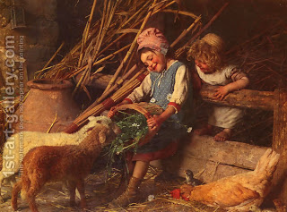

Zevachim 55 - Guilt-, Thanksgiving-, and Peace-Offerings
The remaining most holy offerings are the two lambs brought on Shavuot, and the guilt offerings, which are brought for the following: theft (when one swears falsely that he does not owe the money); misappropriation and personal use of Temple property; relations with a slave woman designated for another man - even if done on purpose and not by mistake; guilt-offerings of a Nazir and a Metsora; and a "pending" offering, brought when one might have transgressed but is not sure.
The thanksgiving offering is holy, but not the most holy: it can be slaughtered anywhere in the Courtyard, it may be eaten anywhere in Jerusalem, by any person, for the day of the offering and the following night. Special portions of it are given to the kohanim and their families.
Peace offerings are similar holy offerings, but can be eaten for an additional day.
Art: Gaetano Chierici - Feeding The Lambs